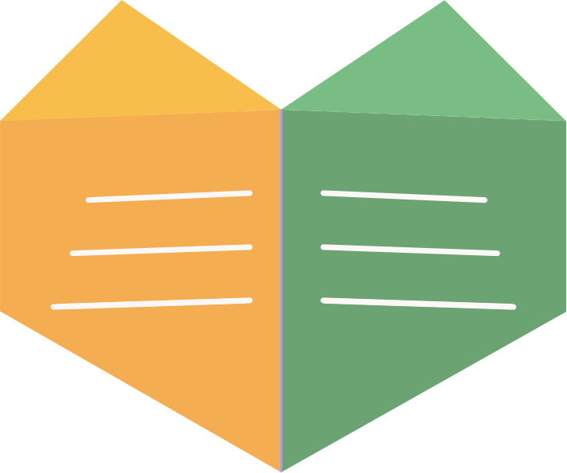
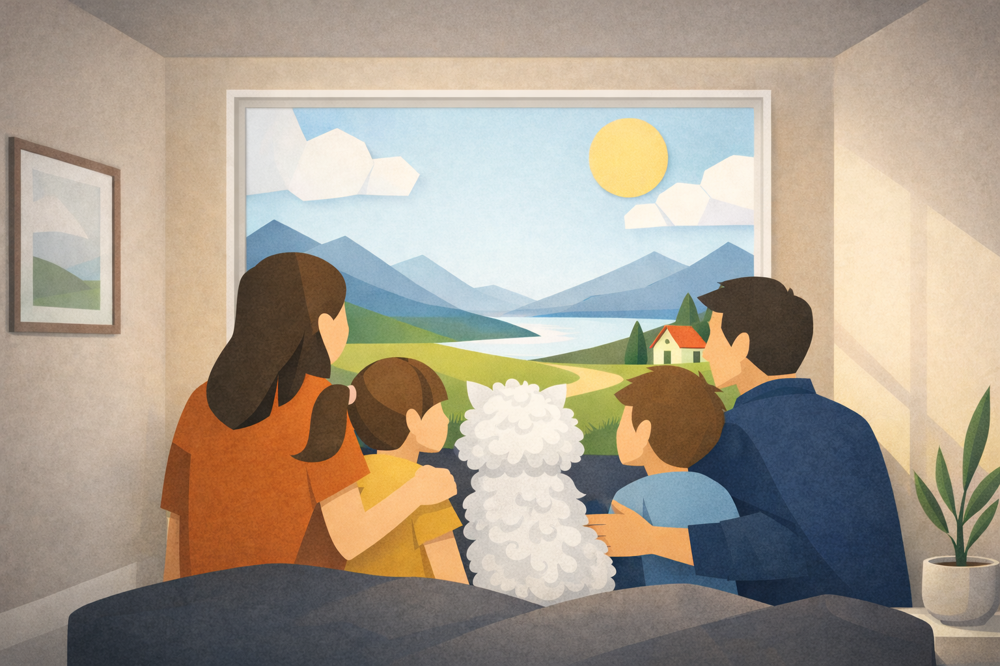
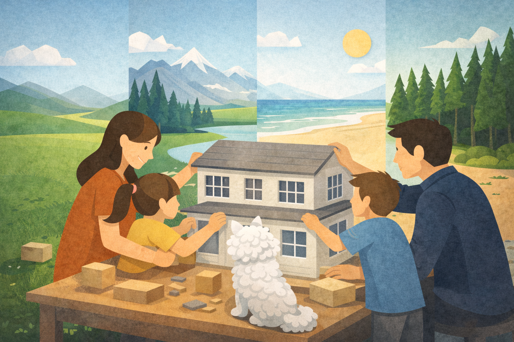
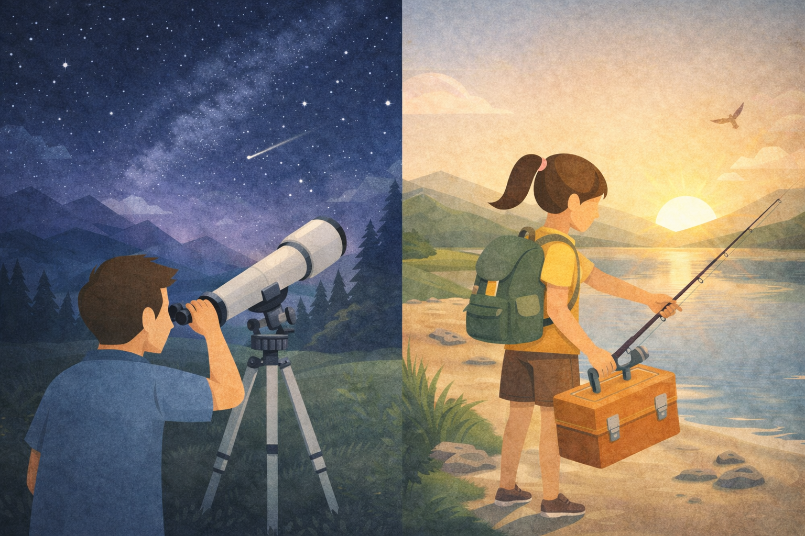

The story of how two parents turned the biggest obstacle to freedom into an education platform — and what we learned along the way.
We had a dream that many families recognise but few dare to act on. We wanted to live — really live — in different parts of the world. Not as tourists passing through, but as a family putting down temporary roots. Experiencing different cultures, languages, landscapes, and people. Watching our children grow up understanding that the world is wide and full of possibility.
But every time we imagined a new place, the same walls enclosed our plans.
What if they fall behind? What if we damage their future?
And so we always ended up in places that were compromises — never our first choice. Education had quietly become the invisible fence around our lives.

So we started asking a different question. Not where can we go without disrupting school? But something bigger: what if high-quality education could evolve around our children, wherever we go?
Thoroughly, and for a long time. What we found disappointed us — not because the platforms were poorly made, but because they misunderstood what learning actually is.
Most were static and linear. Many were not built for families moving across different national curricula. And a striking number were so focused on keeping children engaged — bright colours, games, constant rewards — that they had forgotten the deeper goal: to make children genuinely curious.
To challenge them at exactly the right level. To build the kind of intrinsic motivation that sustains a learner for life. We needed something grounded in the science of learning — not just age-appropriate content, but real understanding of how curiosity is sparked and protected, how challenge should stretch without overwhelming, how a child builds confidence through the right kind of difficulty.
We found nothing that came close.
My background is in psychology. I understand how different people learn, remember, and stay motivated. I know what good developmental scaffolding looks like — and what it feels like when it is missing.
For a while, I tried to fill the gap myself — teaching our children directly, tracking curricula, adapting material to their individual levels. It worked, in the way that an enormous amount of personal effort sometimes works. But when our oldest reached Year 8 and the subjects deepened, keeping pace became almost a full-time job. For one child.
If you cannot find what you are looking for, build it yourself.

We gathered everything — our research into learning science, developmental psychology, smart adaptive learning, international school curricula, and the hard-won knowledge from years of working alongside our own children. We designed, built, tested, and rebuilt. We worked with our children on the platform directly, watching what worked and what didn't, iterating until all of us — parents and children alike — were genuinely satisfied with what it had become.
Not the performed curiosity of a classroom. Real curiosity — the kind that wakes up early and wants to know why the fishermen leave before dawn.
Academically strong. Often ahead. And the world became the lesson.

The result is No Box Education. A platform where tutors, parents, and children work together. Where structure meets flexibility. Where curiosity is treated not as a nice extra but as the entire point. And where a family no longer has to choose between the life they want and the education their children deserve.
No Box Education is not finished. It never will be. Our children use it every day — and when something could be better, they tell us. The ones worth building, we build.
Our daughter was eight when she programmed her first game for the platform. Then a second. Then a third.
She did not do it because we asked her to. She did it because she had learned to believe: if you see something missing, you fill it.
That is what No Box Education is trying to do. Not just teach children what is already known — but grow children who build what does not yet exist.
Every child learns differently. We built this so yours can keep exploring — wherever you are in the world.
Learning is a journey, not a destination.
Begin with a short intake survey. Then we'll personally design a learning program around your child.
Start Your Intake